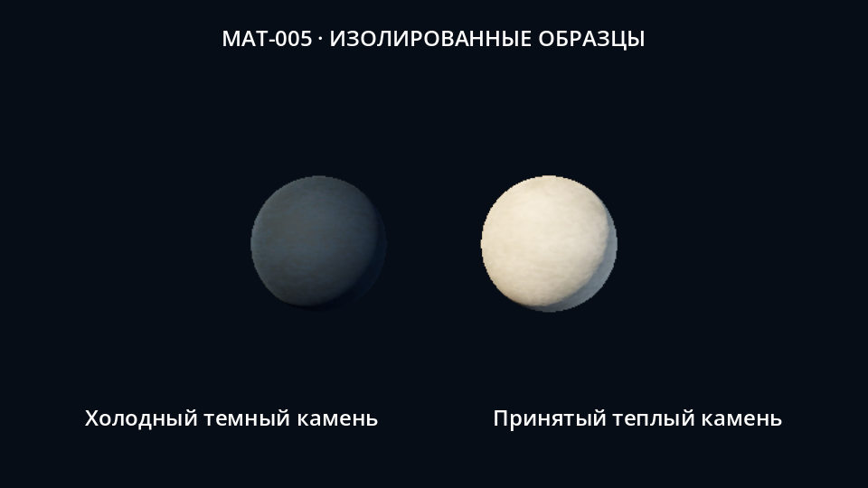
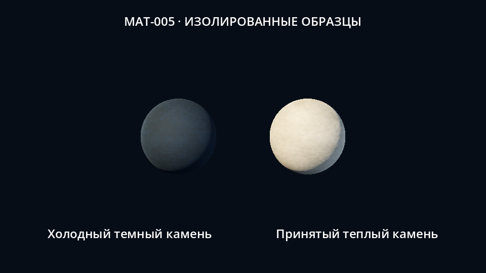
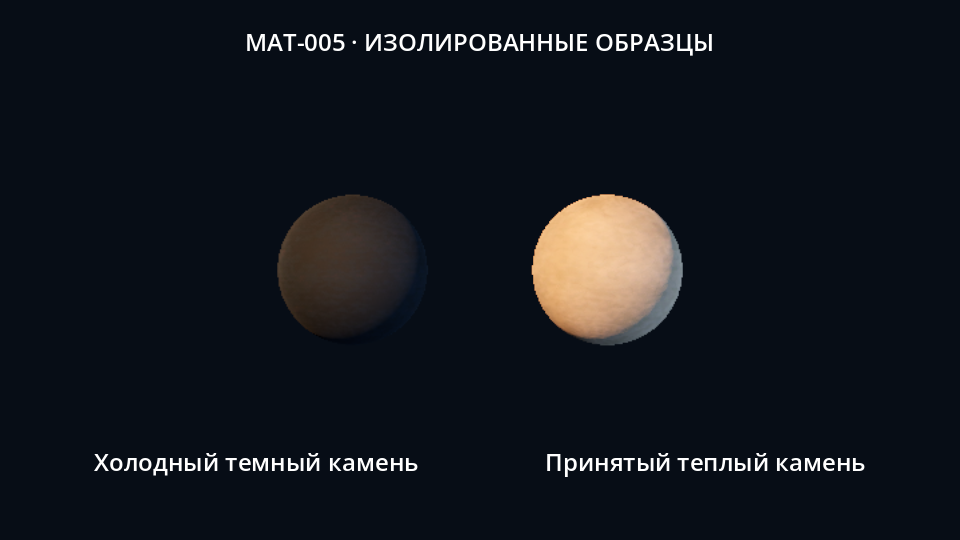
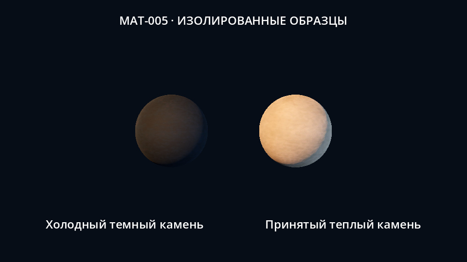
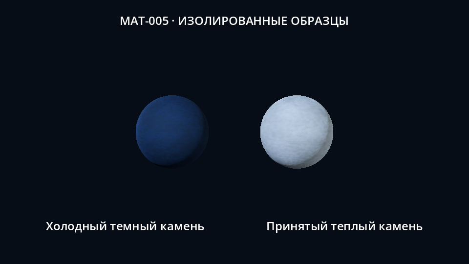
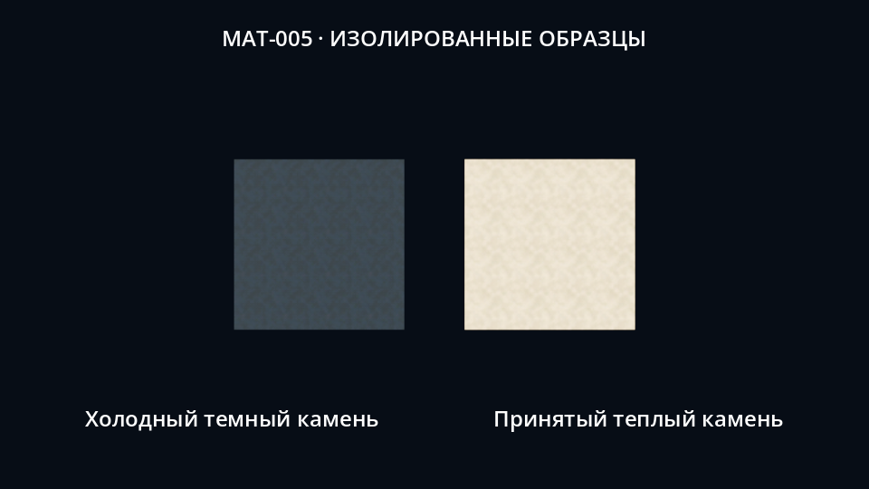

MAT-005 · Холодный темный камень Только изолированные образцы. Слева новый материал, справа принятый теплый камень. Shipping-интеграция, целевой GPU и полная художественная приемка остаются открытыми.

stone_neutral_low.png · native Forward+, scale .75 
stone_neutral_medium.png · native Forward+, scale 1.0 
stone_warm_low.png · native Forward+, scale .75 
stone_warm_medium.png · native Forward+, scale 1.0 stone_cool_low.png · native Forward+, scale .75 
stone_cool_medium.png · native Forward+, scale 1.0 
stone_tiles_low.png · native Forward+, scale .75 stone_tiles_medium.png · native Forward+, scale 1.0